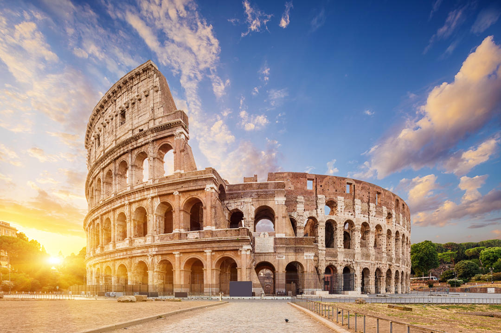
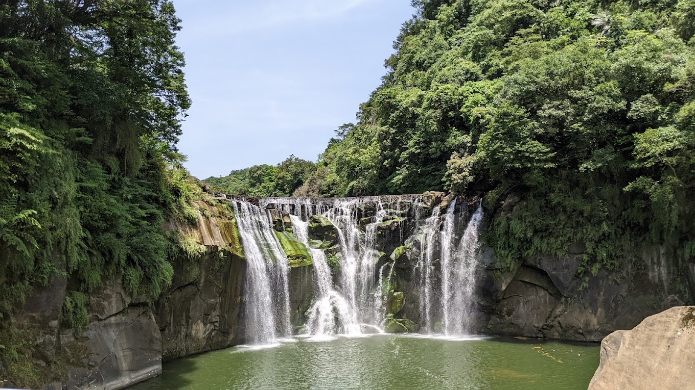
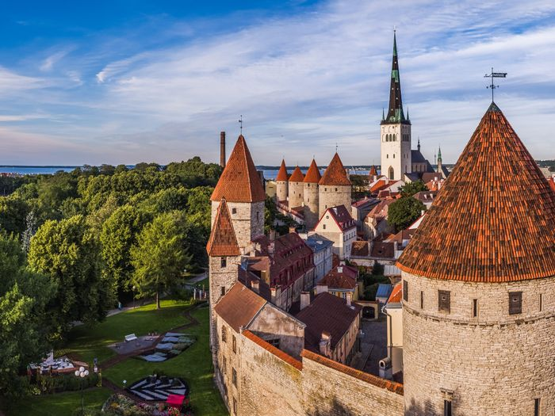
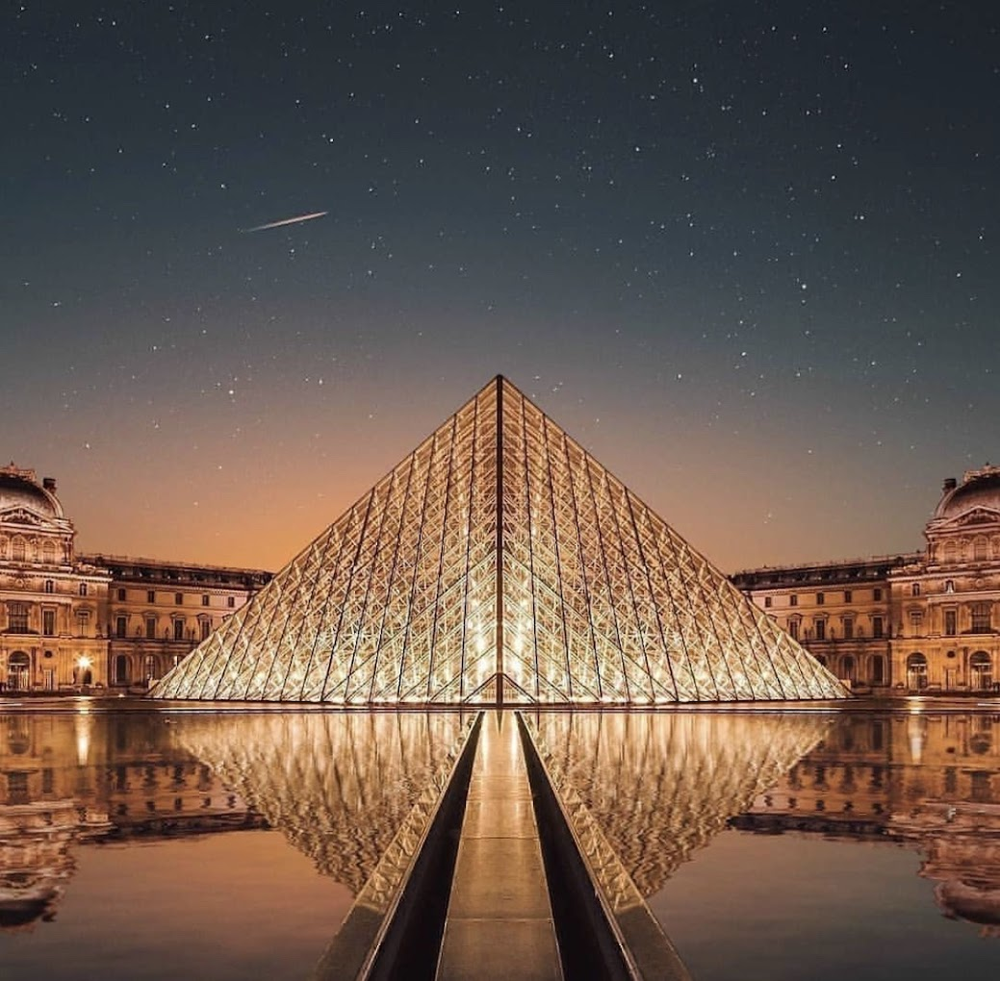

| Location | Attractions | Best time to visit | Estimated Cost | Reason to go or a Fact |
|---|---|---|---|---|
| Italy  |
Colosseum Pantheon Tower of Pisa |
Spring Autumn |
$3.5 k for 2 weeks | I've always wanted to see the coloseum |
| Taiwan  |
Shifen Waterfall Sun Moon Lake Kanting National Park |
$2.1 k for 2 weeks | I'd like to see the integration of modern cities in scenic environments | |
| Estonia  |
Tallin Old Town Nun tower & walls Lahemaa National Park |
$2.3 k for 2 weeks | Estonia is known for it's medieval towns and that would be an experience to walk through | |
| Paris  |
Eiffel Tower Louvre Catacombs |
Spring Fall |
$2.9 k for 2 weeks | Walking the Catacombs has always been on my bucket list |
Sri Lanka  |
Uduwalawe National Park Pidurangala Rock Little Adams's Peak |
December - March for South and West coast May - September for East coast |
$1.5 k - $2 k for two weeks depending on time of travel | Diverse animal species as well as diverse beaches and coasts |
| Order of Visitation | ||||
| Sri lanka Paris Estonia Taiwan Italy |
||||